A Multi-Task Dataset and Benchmark for Railway Scene Understanding
2D Semantic Segmentation
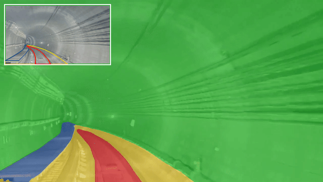
Curved tunnel
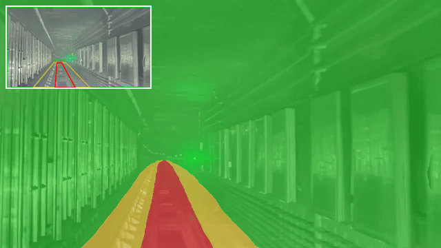
Enclosed corridor
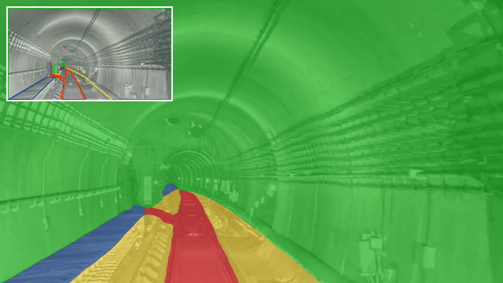
Approaching an underground junction
3D Object Detection
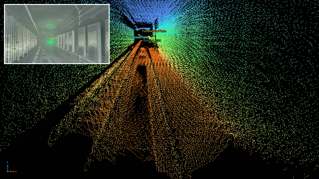
Signals along the corridor
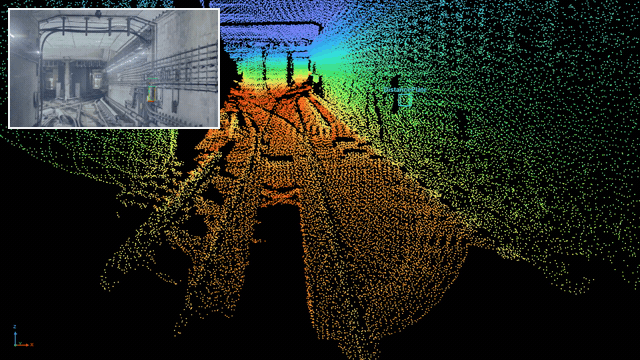
Trackside facilities in 3D
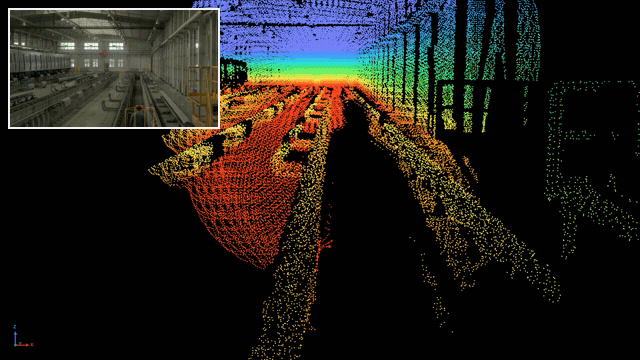
Human beside the track
3D Semantic Occupancy
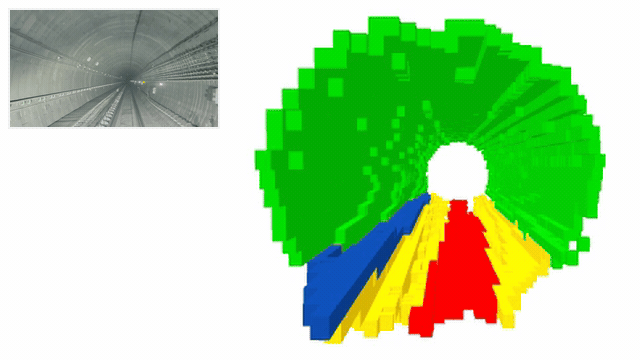
Tunnel corridor
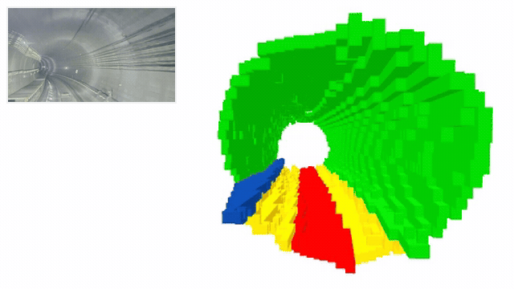
Curved tunnel
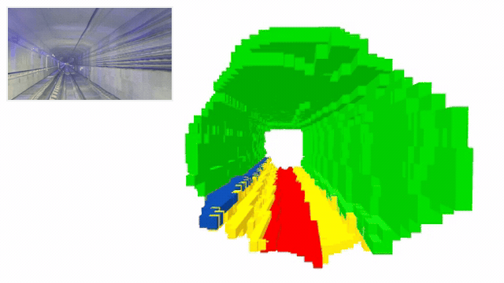
Tunnel connection
02Overview
Built around railway understanding.
RailScenes brings camera images and LiDAR observations together across two operating railway lines. Its annotations support 2D Semantic Segmentation, 3D Object Detection, and 3D Semantic Occupancy Prediction.
The dataset connects environmental variation with the spatial perception of railway facilities: extended corridors, changing track layouts, and small objects along the direction of travel.
11,445
camera–LiDAR samples
2
operating railway lines
3
perception tasks
7 / 6 / 6
classes · segmentation / detection / occupancy
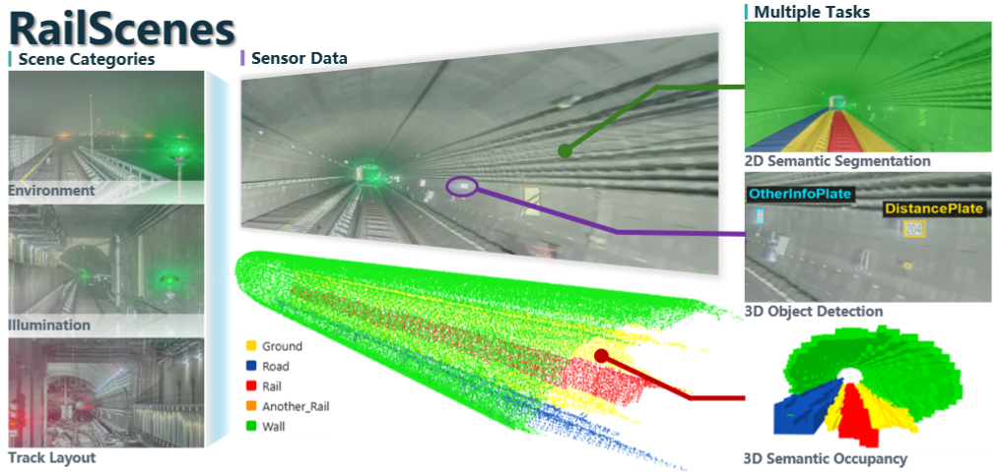
A shared railway setting for image semantics, object-level geometry, and semantic occupancy.
Scene coverage
Changing environments. Changing views.
Above-ground routes, enclosed sections, tunnels, and stations — with variation in illumination and track layout.
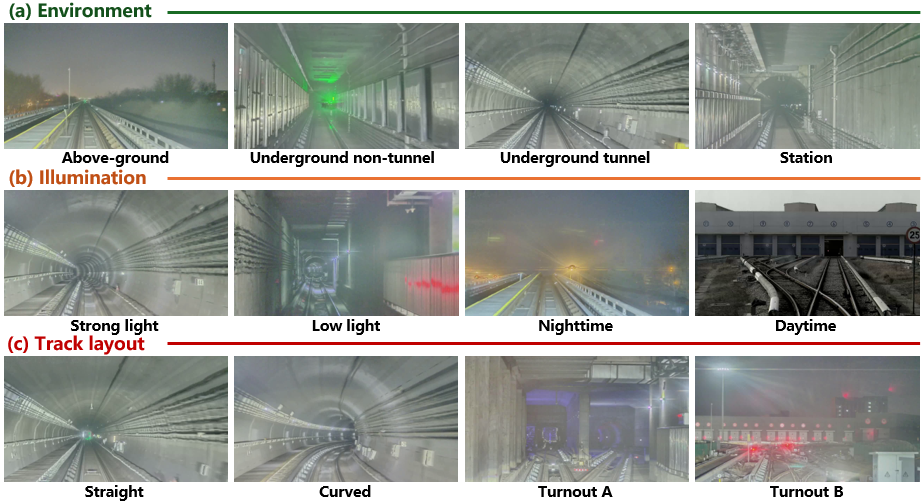
Representative scenes from the paper. Environment, illumination, and track layout describe separate attribute dimensions.
Data analysis / 01
Coverage across railway conditions.
The recorded attributes describe the composition of the dataset across three dimensions.
Counts are frames within each recorded attribute dimension. Scene coverage is not a measure of cross-domain generalization.
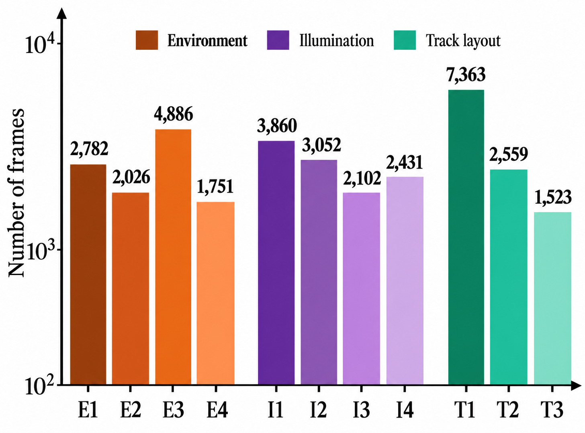
Scene composition. The vertical axis uses a logarithmic scale.
Data analysis / 02
Three annotation spaces. Distinct class distributions.
Image polygons, 3D boxes, and semantic voxels capture different aspects of the same railway environment.
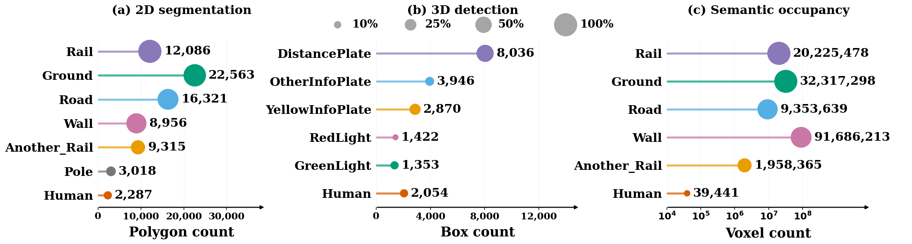
Counts use task-specific units: polygons for 2D segmentation, instances for detection, and voxels for occupancy. Marker area represents the proportion of annotated frames containing each class.
Dataset split
7,988 train
2,286 validation
1,171 test
03Benchmark
Three tasks. A common research setting.
Results from the current RailScenes manuscript. All tables report test-set metrics; illustrative scenes complement the quantitative evaluation.
01
2D Semantic Segmentation
Seven semantic classes · per-class IoU and mIoU
DPT achieves the highest reported mIoU (94.05%). Large wall regions are consistently recovered, while neighboring rails and local semantic boundaries remain more challenging.
Semantic segmentation results All values in %. Bold: best across all methods.
Method
Rail
Another Rail
Wall
Human
Road
Ground
Pole
mIoU
BiSeNetV2
87.89
84.95
99.42
90.62
92.98
87.66
96.11
91.38
DDRNet
89.22
88.11
99.36
93.95
93.08
88.22
97.23
92.74
PIDNet
89.64
87.42
99.46
93.40
93.34
89.09
96.80
92.74
STDC1
88.85
85.23
99.46
87.46
92.79
88.79
91.21
90.54
DPT
90.91
89.58
99.58
95.81
94.53
90.66
97.30
94.05
SegFormer
89.58
87.11
99.55
93.80
93.91
89.71
96.89
92.94
Segmenter
85.47
82.83
99.32
89.64
90.49
85.22
90.89
89.12
SETR
90.11
87.81
99.57
95.02
93.98
90.17
96.83
93.35
K-Net
89.92
88.19
99.54
94.61
94.08
89.57
97.68
93.37
MaskFormer
84.86
82.18
99.50
91.71
92.93
88.49
96.73
90.92
Mask2Former
90.16
86.60
99.58
95.30
94.81
90.57
97.25
93.47
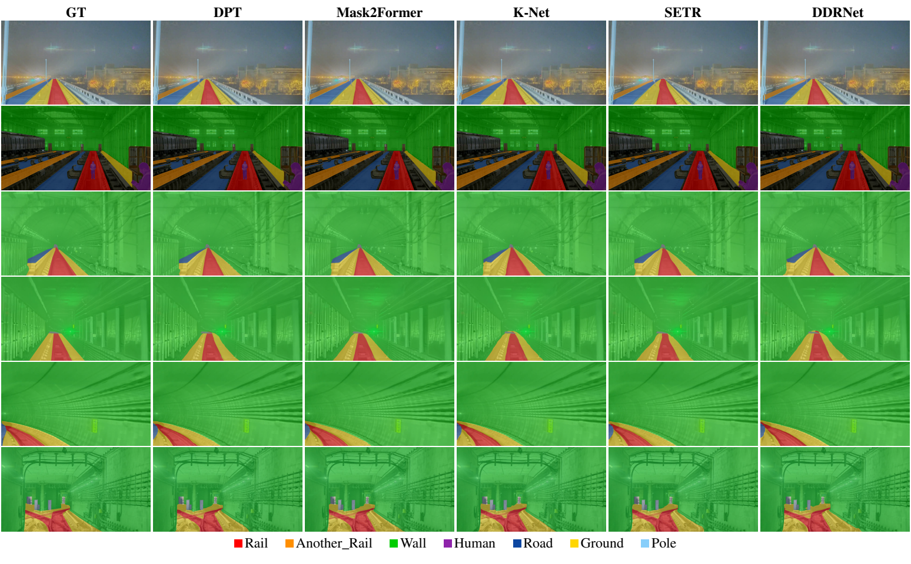
Six scenes, five baselines, and ground truth. Colors denote the seven semantic classes.
02
3D Object Detection
Camera, LiDAR, and fusion baselines · six facility and human categories
The benchmark evaluates category recognition and planar center localization. FocalsConv leads the reported comparison in overall mAP (46.83%), while category-level differences reveal complementary strengths across modalities.
AP averages planar center-distance matching thresholds of 0.5, 1, 2, and 4 m. These are center-distance metrics, not box-IoU AP.
3D object detection results All values in %. Bold: best within each modality group.
Method
Red light
Human
Other info. plate
Distance plate
Yellow info. plate
Green light
mAP
Camera
Far3D
1.61
31.20
3.47
22.40
19.81
38.67
19.53
BEVFormer
3.15
45.81
0.04
17.60
12.73
22.16
16.91
BEVNeXt
2.27
78.99
0.71
23.05
16.32
11.91
22.21
BEVDet
7.65
86.12
1.65
23.33
15.91
10.91
24.26
DualBEV
3.83
67.38
0.24
22.80
14.86
10.20
19.88
StreamPETR
3.29
68.15
0.13
19.43
8.47
5.68
17.53
MonoCoP
3.74
22.21
0.62
31.33
18.79
24.91
16.94
LiDAR
SphereFormer
39.25
99.59
30.49
7.80
0.77
19.96
32.98
DSVT
53.82
98.35
53.84
11.50
3.73
16.17
39.57
HEDNet
28.49
98.38
45.76
6.50
4.42
15.91
33.24
SAFDNet
36.00
97.41
41.93
9.40
0.76
7.15
32.11
VoxelNeXt
36.50
98.99
8.10
5.49
0.53
22.99
28.77
Camera + LiDAR
BEVFusion
22.49
67.64
16.46
11.62
0.95
12.43
21.93
TransFusion
28.93
68.53
21.47
11.95
1.81
9.82
23.75
IS-Fusion
50.79
75.43
53.22
30.30
13.53
39.37
43.77
FocalsConv
58.64
96.69
33.90
37.35
14.97
39.42
46.83
UniTR
36.42
95.38
29.42
29.71
18.00
35.28
40.70
Performance along the railway corridor
Forward-distance bins expose how detection changes with depth. Each bin averages only classes with ground-truth instances in that bin.
Detection mAP by forward distance All values in %. Bold: best within each modality group.
Method
0–50 m
50–100 m
100–150 m
150–200 m
Camera
Far3D
29.05
22.75
9.43
0.00
BEVFormer
26.78
14.22
0.09
0.00
BEVNeXt
34.41
17.30
0.14
0.00
BEVDet
37.75
17.51
0.17
0.18
DualBEV
34.11
7.28
0.31
0.00
StreamPETR
30.13
7.14
0.08
0.00
MonoCoP
26.50
18.52
0.90
0.12
LiDAR
SphereFormer
37.51
24.64
0.48
14.67
DSVT
35.15
34.79
2.32
31.38
HEDNet
28.78
24.22
3.13
34.19
SAFDNet
25.97
28.03
2.60
23.18
VoxelNeXt
32.79
26.15
0.18
4.48
Camera + LiDAR
BEVFusion
26.92
20.06
1.63
7.46
TransFusion
29.90
22.22
1.47
8.44
IS-Fusion
47.75
39.21
4.47
27.18
FocalsConv
52.07
39.63
3.07
21.05
UniTR
45.31
34.85
3.90
17.30
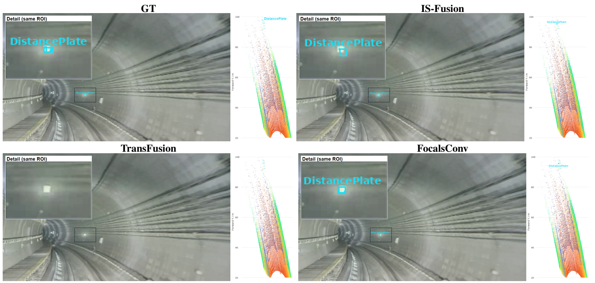
A selected sign is approximately 100 m ahead; its projected GT bounding rectangle spans about 12 × 7 pixels in the original image. The comparison retains the methods’ original prediction differences.
Small in the image. Far along the track.
This setting supports research on the spatial perception of distant railway facilities. Evaluation extent does not imply a reliable detection distance.
The class composition differs between distance bins; their mAP values are not directly comparable as a monotonic distance trend.
03
3D Semantic Occupancy Prediction
Six semantic classes · SC IoU and semantic mIoU
OccFormer achieves the highest reported semantic mIoU (69.58%), while TPVFormer obtains the highest SC IoU (68.11%). Class-wise differences, including human occupancy, motivate category-aware evaluation in railway scenes.
The occupancy grid is 128 × 320 × 32, with 0.20 × 0.20 × 0.25 m voxels and a 64 m longitudinal extent. Unknown and ignored voxels are excluded from evaluation; free space is excluded from semantic mIoU.
3D semantic occupancy prediction results All values in %. Bold: best across all methods.
Method
Ground
Road
Rail
Another Rail
Wall
Human
SC IoU
mIoU
DAOcc
40.43
27.66
23.05
3.31
32.87
0.00
24.62
21.22
FlashOcc
48.37
19.11
8.03
0.00
89.11
0.00
10.61
27.44
BEVDet-Occ
48.78
17.03
6.98
8.45
89.13
0.00
10.61
28.40
SurroundOcc
55.95
64.74
63.77
43.72
64.80
4.87
54.07
49.64
TPVFormer
72.27
79.16
77.90
47.46
79.92
4.84
68.11
60.26
CONet
68.73
23.28
71.13
0.11
91.16
0.79
10.63
42.53
OccFormer
73.24
72.15
76.71
48.48
86.51
60.40
59.62
69.58
VoxFormer
36.94
18.32
36.86
3.07
45.77
0.00
45.74
23.49
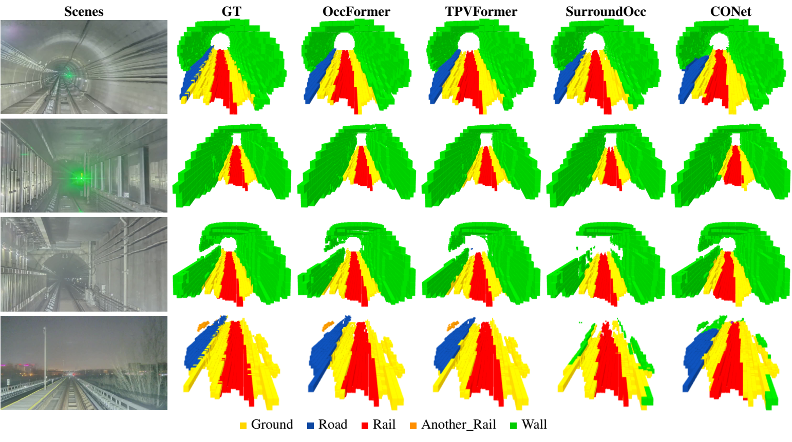
Four selected scenes shown with consistent semantic colors and viewpoints: GT, OccFormer, TPVFormer, SurroundOcc, and CONet.
RailScenes provides railway occupancy ground truth and a benchmark for studying how existing methods transfer to extended rail corridors, and for developing methods around railway geometry.
04Download
Preparing for an open release.
After paper acceptance
The dataset will be made publicly available after the paper is accepted. Download links, release terms, and documentation will be added here.
01
Sensor data
Camera images and LiDAR observations from railway scenes.
02
Annotations & splits
Task annotations and dataset splits for reproducible evaluation.
05Citation
Cite RailScenes.
The final citation will be added when publication details are available.
# RailScenes
# BibTeX citation coming after publication.